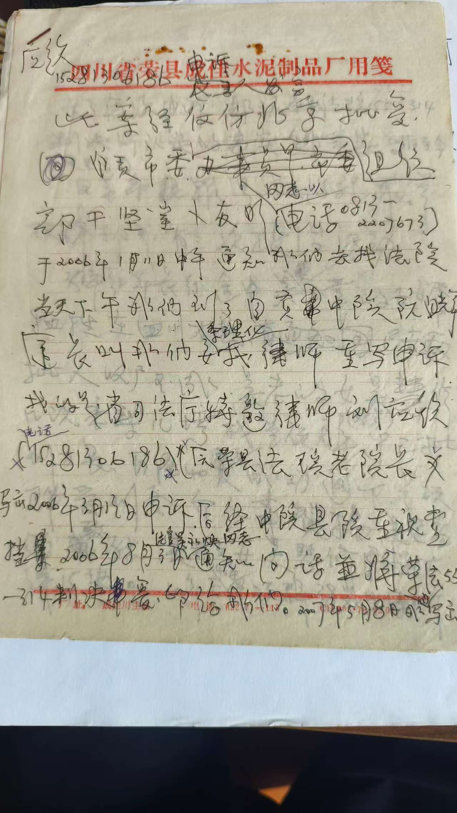
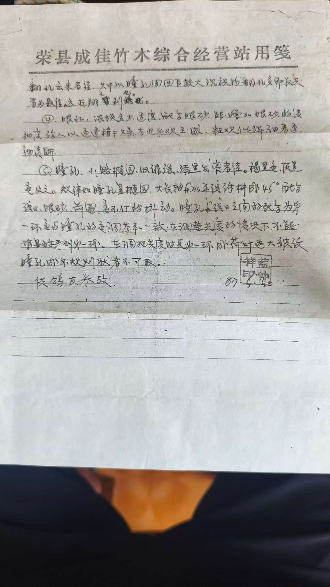

风骨长存：大义的代价与回响
“那是属于草莽义士的年代。大义，从来不是书本上的高谈阔论，而是流淌在血脉里、敢于直面刀枪的不灭薪火。”
那是1935年的寒冬，巴蜀大地笼罩在国民党反动派最猖獗的白色恐怖之下。革命烈士兰庶康（吴玉章之女婿）在万县惨遭杀害，据传遗体被施以极刑，指甲壳里生生钉满了竹签。面对这等惨状与杀身之祸，前两批受托收尸之人皆因恐惧而半途折返。在这令人绝望的关头，兰硕群挺身而出。他没有豪言壮语，只身一人，带着几斤生石灰与老树皮，踏上了赴万县的生死之路。整整四十个日夜的风餐露宿、昼伏夜出，他硬是将那口装载着义与胆的沉重文书桶背回了故乡。灵柩归乡那日，成佳镇的乡民沿街拉起长长的白布，夹道泣迎，鞭炮声震耳欲聋。这不是普通的收尸，这是在乱世中为中国人抢回了一尊不屈的魂魄。
这股埋在骨子里的血性，在抗战胜利后的1945年再次轰然爆发。面对国民党师管区“接兵部队”借“借锅煮饭”之名，实则在乡间烧杀抢掠、欺凌妇女的暴行，兰硕群再也无法按捺胸中怒火。当目睹亲弟兰克群遭十余名士官围殴时，他犹如一头被激怒的雄狮，抄起院中沉甸甸的捣药“碓窝棒”纵身上房，居高临下，与胞弟配合，硬是以少胜多，将近二十名荷枪实弹的伪军军官打得头破血流、落荒而逃。“兰莽汉”的威名自此震慑一方，无数饱受抓丁之苦的穷苦百姓纷纷迁入他所在的保内以求庇护。
“在那血雨腥风的岁月里，他是一座庇护乡邻、坚不可摧的丰碑。乡亲们用‘种豆选举’的古老方式将他推举为代理村长。然而，英雄的注脚，往往潜伏着最为沉重、最为荒诞的代价。”

【 早期家族纪实手稿 】
记载了那个动荡年代家族的艰难抉择与生死考验。

【 1986：太婆龚文成亲笔 】
78岁高龄致信中央，回忆当年支持丈夫千里收尸的“特别辛味”。

【 饶先郎等民众联合证词 】
“通街准备迎接，白布拉得长长的，放鞭炮迎接，场面壮烈得很……”乡民的记忆成为了最坚实的后盾。
代号314：一场荒诞的法理交锋
“当几棵未栽下的秧苗，足以摧毁一个人的一生。真相究竟如何？让我们翻开卷宗，让跨越时空的民间证言，如手术刀般切开历史的迷雾。”

点击图片查看高清原件
足以致命的“鸡毛蒜皮”
1955年，新中国刚刚成立不久，历史的列车在这里发生了一次令人战栗的脱轨。翻开这份泛黄的(55)刑字第314号判决书，荒诞感犹如实质般扑面而来。
在那个极左思潮暗流涌动的时期，一个人一生的功过，竟被轻而易举地抹杀。判决书赫然写着：“影响三箩田面积未栽秧子”、“以抬高工资手段拉拢组员”。就凭这些连日后法院内部人员都私下承认为“鸡毛蒜皮”的罪名，加上其18岁时被抓壮丁当过三个月伪兵（后自行逃脱）的无奈履历，将一位受民选担任代理村长、曾豁出性命保境安民的义士，生生定性为“历史反革命”。
没有公开审理，没有证人出庭辩护。判决结果：有期徒刑十年。这一纸冰冷的文书，不仅宣判了兰硕群肉体的放逐，更将兰氏家族上百名亲属拖入了长达三十年的政治连坐深渊。
底层乡民拒绝集体失忆
历史的迷雾再厚，也遮不住亲历者的眼睛。1991年，当兰仲祥老人艰难地收集申诉证据时，那些曾经受过兰家恩惠、目睹过当年壮举的老乡们，颤抖着握起笔，写下了最朴素也最致命的证词。
林荣龙在信纸上清清楚楚地写下：“三十年代……打听得知兰硕群去万县收兰庶康尸体去了...尸体回成佳那天，满街都在准备迎接。”这份证言，如同一记响亮的耳光，直接粉碎了判决书中暗示其“解放前反动”的政治定性。
饶先郎更是按着红手印证实：“他曾率众痛打伪军军官，大长民众志气。”这些来自底层乡民最真实的呐喊，被压抑了几十年后，终于在档案纸上爆发。他们证明了被告席上站着的不是罪人，而是一位在乱世中挺身而出的侠客。

林荣龙证言 (1991)
饶先郎证言 (1991)

胞弟兰克群证词 (1991)
“我们一起生，一起打”
在所有物证中，最具法律效力也最令人心碎的，莫过于胞弟兰克群在1991年写下的这份证实材料。作为当年与兄长并肩作战对抗伪军的生死兄弟，他的证词如同惊雷，彻底掀翻了判决书中欲加之罪的底牌。
他详细描述了兄弟二人如何默契配合：“兰硕群挺身而出……抓起碓窝棒打倒带头的，并顺势纵身上房……我与他配合，不到半小时打伤师管区士官十九个。这是一场以少胜多的恶战，更是为民除害之举！”每一个字都透着血性与骄傲。
代价的无情连坐：
然而，覆巢之下，安有完卵。因为兄长的“反革命”帽子，曾一起保卫家乡的兰克群也惨遭连坐，半生抬不起头。直到十一届三中全会后的1979年，这位老人才颤抖着双手，等来了那份迟到太久的《摘掉帽子通知书》。弟弟等到了清白，而哥哥却早已化作西域黄沙。
岁月刻度：被拉长的苦难与坚守
“客观的数据，往往比抒情的文字更具刺痛人心的力量。四十天的短促壮举，最终却要用一个家族近百年的岁月来偿还与抗争。”
历史事件时间跨度极限对比图
迟到了半年的
死亡通知书
1961年的新疆沙湾，风沙漫天。兰硕群带着“历史反革命”的屈辱印记，孤独地咽下了最后一口气。几个月后的10月，一张薄如蝉翼、编号“勇亡字第281号”的通知书才辗转寄回四川老家。
批注：“因不知道你们家庭地址，所以通知晚了，请保民谅”——这句轻飘飘的话，成为了家族永远无法愈合的致命伤口。
一张二十元的
硬座火车票
2008年4月13日，成都至自贡，硬座，20元。这是一张被老人的汗水反复浸透、揉捏过的车票。75岁的兰仲祥，带着满头白发和一整包重达数斤的《再次申诉书》，再次踏上旅途。
在北京西站巨大且冷漠的建筑前，他留下了最后的申诉剪影。他的身影显得如此渺小，却又像磐石般坚硬。55年的光阴，压不弯这铮铮铁骨。
那一枚绿色的
官方出席证
2001年，秋风送爽。兰仲祥与其弟兰天祥，作为当年冒死收尸的“革命烈士亲属”，正式受邀出席自贡市纪念辛亥革命暨吴玉章骨灰安放活动。大会首长们那一次次紧紧的握手致意，跨越了漫长的时空。
虽然迟到了近半个世纪，但正义的缺席，终究变成了迟到的回响。这张卡片，是对先辈壮举最崇高的国家级慰藉。
光阴的回响：鸽哨、宪法与旧皮箱
“当厚重的卷宗合上，我们看到的不再只是苦难的暴烈，而是一位老人在绝境中对生活情致的倔强坚守，以及对法治近乎苛刻的纯粹信仰。”
当尘埃落定，历史的硝烟散去，我们重新翻开这些被岁月摩挲得微微发脆的文件，看到的不仅仅是横眉冷对的抗争锋芒，更有一份令人动容的温情与深邃的智慧。最令人震撼的，是爷爷兰仲祥在极致的苦难中所保持的惊人理智与盎然的生活情致。

《识鸽子》手稿原件
未被吞噬的飞鸟
在那些最难熬的日子里，他的世界里不仅有冰冷绝望的法条，还有鸽子轻盈振翅的声音。在写下无数封字字泣血的申诉状的同时，他竟然还能用同一支钢笔，极其专业、细腻地写下这篇名为《识鸽子》的鉴赏手稿。
“眼如火，底砂色素布列……”
这些精妙考究的句子，在这几页蝇头小楷上跳跃。透过这些纸页，我们仿佛能看到那个哪怕历经半生沧桑，依然会背着手、抬头仰望天空、热爱世间万物的倔强老人。苦难的深渊，终究未能彻底吞噬他的灵魂与眼底的光。

1995年宪法治家协议书
刻在骨子里的法治信仰
而更让人肃然起敬的，是他超越时代的法治精神。在1995年为子女起草《分房书》时，在那个偏远的中国乡村，他竟史无前例地将《中华人民共和国宪法》中关于子女赡养义务的条款，端端正正地抄写在家庭财产分割协议的最开头，作为全篇的总纲。
半生的冤屈并没有让他变成一个仇视社会的莽夫。相反，他用一生的痛，换来了对“法治”最纯粹、最极致的信仰。他要用白纸黑字让子孙后代永远铭记：家有家规，国必有法；哪怕受过天大的委屈，也不能丢了对底线和公理的敬畏。这就是他留给兰氏家族最坚固的铠甲。
【 岁 月 流 影 】
“从青年干部的英气，到白发苍苍的孤勇，照片锁住了时光，也锁住了一个人的风骨。”

青年 · 干部的英气

壮年 · 承压的脊梁

中年 · 沉淀的儒雅

晚年 · 白发的孤勇
全宗卷物证陈列库
点击图片可放大查看原件细节。历史的全部真相，皆隐藏于这些斑驳的纹理之中。
1955 判决书

1961 死亡通知

1979 胞弟平反

2001 官方出席证

2008 申诉车票
林荣龙证词
饶先郎证词
胞弟证词
太婆亲书

法院沟通手记
家族早期手记

识鸽子续页
宪法治家书

晚年合影

1987 证件